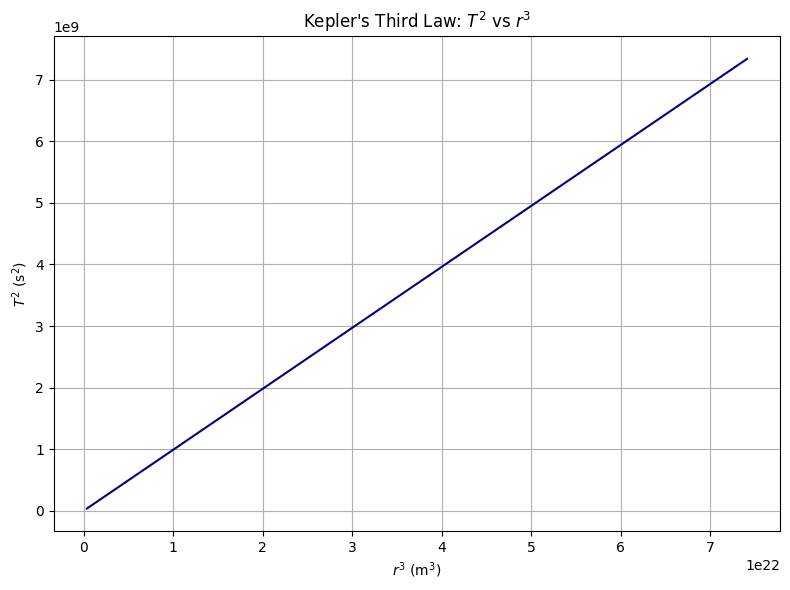

Problem 1
Step 1: Deriving Kepler's Third Law from Newtonian Mechanics
Let us consider a body of mass \(m\) in a circular orbit of radius \(r\) around a much larger mass \(M\) (e.g., a planet orbiting the Sun). Newton’s Law of Gravitation provides the gravitational force between them:
The required centripetal force to maintain a circular orbit is:
Equating the two forces:
Canceling \(m\) and simplifying:
The orbital speed \(v\) is related to the orbital period \(T\) by:
Substitute into the previous equation:
Now solve for \(T^2\):
Multiply both sides by \(T^2\) and divide by \(G M\):
This is Kepler’s Third Law, showing that:
The constant of proportionality depends only on the central mass \(M\) and physical constant \(G\):
Step 2: Implications for Planetary Motions
Kepler’s Third Law has deep implications for understanding planetary systems:
-
Uniformity Across Planets: For planets orbiting the same body (like the Sun), the ratio \(T^2/r^3\) is constant. This means that we can compare orbits across the solar system using only period and radius.
-
Example: If one planet is 2 times farther from the Sun than another, its period will be:
-
Role of Mass: The mass of the orbiting object \(m\) cancels in the derivation. So small satellites and large moons follow the same law, depending only on the central mass \(M\).
-
Applications:
- Calculating planetary distances
- Estimating stellar and planetary masses
- Predicting satellite orbits
Step 3: Real-World Example – The Moon
Let’s use Kepler’s law to estimate Earth’s mass from the Moon’s orbit:
- Orbital radius of Moon: \(r = 3.84 \times 10^8\) m
- Period: \(T = 27.32\) days = \(2.36 \times 10^6\) s
Rearranging the law:
Plugging in values:
This yields approximately \(M \approx 5.97 \times 10^{24}\) kg — a very accurate estimate of Earth's mass.
This confirms both the validity and the precision of Kepler’s Third Law.
Step 4: Python Simulation – Visualizing \(T^2 \propto r^3\)
We can simulate various orbital radii and plot \(T^2\) vs \(r^3\) to confirm the linear relationship:
import numpy as np
import matplotlib.pyplot as plt
# Constants
G = 6.67430e-11 # gravitational constant (m^3 kg^-1 s^-2)
M = 5.972e24 # mass of Earth (kg)
# Orbital radii (m)
radii = np.linspace(7e6, 4.2e7, 100) # from 7000 km to 42,000 km
periods = 2 * np.pi * np.sqrt(radii**3 / (G * M)) # T = 2π√(r^3/GM)
# Plotting T^2 vs r^3
r3 = radii**3
T2 = periods**2
plt.figure(figsize=(8, 6))
plt.plot(r3, T2, color='navy')
plt.xlabel('$r^3$ (m$^3$)')
plt.ylabel('$T^2$ (s$^2$)')
plt.title('Kepler\'s Third Law: $T^2$ vs $r^3$')
plt.grid(True)
plt.tight_layout()
plt.show()

Step 6: Elliptical Orbits and Generalization
For elliptical orbits, \(r\) is replaced by the semi-major axis \(a\):
The law still holds for all planets and moons with elliptical paths, as long as \(a\) is used instead of \(r\).
✅ Summary
- We derived and confirmed Kepler’s Third Law for circular orbits.
- The law connects period and radius via gravity.
- Simulations and plots verify that \(T^2 \propto r^3\).
- Real-world systems (like the Moon or satellites) follow this same law.